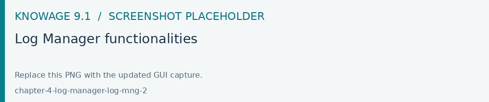

Log Manager
Open Modules > Tools > Log Management with an authorized role. Select the relevant application or log, narrow the period and inspect the messages around the failed operation. Use the matching tenant and retain the correlation information when reporting an issue.
The Log Manager functionality is available under the Tools section of the Knowage main menu, allows the management of all log files of the Knowage installation.
Log Manager functionalities
The Log Manager window is subdivided in two sections, on the left the tree structure representing existing logs system and on the right the content of the selected file.
Tree functionalities
The tree shows all log files of the service grouped in separate folders. On the top bar are present two funcionalities, Refresh tree and Download files.
Pay attention that to download files, users must select them by clicking on the box placed at log file’s left. All the files grouped inside a folder can be selected by selecting that folder.
Users can apply filters to all log files showing only those that meet the requirements. Using Search files are filtered by name and by interacting with the Date icon users can select dates and filter files based on them.
Pay attention that by default date filter selects only the current date, in the date menu Reset button resets to default date filter. To select / deselect a specific date click on it.
File content panel
When a file is selected, the right panel shows all it’s content. On the top right are present two functionalities, Refresh file content and Close file.

Pay attention that when another file is selected, previously opened file is closed automatically.
With Ctrl + f shortcut, users can search specified words inside file’s content.
When no file is selected, the right panel diplays a tooltip containing all the essential informations about this log management service.